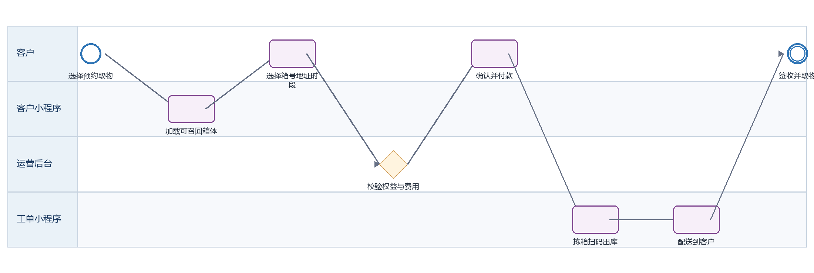

迷你箱召回取物 PRD
下载 Word 文档迷你箱召回取物 PRD
客户小程序研发详细需求规格 · V2.0 · 2026-09-08
定义客户从在仓箱体中选择部分或全部箱体，预约召回并接收配送取物的规则。
| 属性 | 内容 |
|---|---|
| 文档编号 | MP-BX-03 |
| 适用端 | 客户小程序、运营后台、工单小程序及领域服务 |
| 范围 | 召回资格、箱体选择、地址与时段、费用/权益、出库拣箱、配送、客户取物。 |
| 不在本模块范围 | 仓内波次拣选算法。 |
1 目标与边界
1.1 本期范围
召回资格、箱体选择、地址与时段、费用/权益、出库拣箱、配送、客户取物。
1.2 不在本模块范围
仓内波次拣选算法。
1.3 角色与系统责任
| 角色或系统 | 职责 |
|---|---|
| 客户 | 浏览、选择、签约、付款、提交申请、查询进度 |
| 客户小程序 | 采集意图并展示服务端状态，不自行决定价格、库存、资格或审批结果 |
| 运营后台 | 维护主数据、价格、库存、可操作项、审批、异常处理和人工改派 |
| 工单小程序 | 承接送取、验收、搬仓、清仓等线下任务，回传节点、附件和异常 |
| 领域服务 | 保存订单、租约、箱体、预约、支付与合同的权威状态并发布事件 |
2 BPMN 业务流程

圆形表示开始或结束事件，圆角矩形表示任务，菱形表示服务端判断。
跨端节点必须先写入领域服务，再由事件刷新客户侧时间线。
3 状态机与准入
| 状态码 | 客户文案 | 进入条件 | 下一步 |
|---|---|---|---|
| STORED | 在仓存放 | 箱体可召回 | 提交召回 |
| RECALL_SUBMITTED | 召回已提交 | 容量和费用已确认 | 拣箱 |
| PICKING | 召回处理中 | 中央仓拣箱 | 出库 |
| DELIVERING | 取物配送中 | 运输到客户 | 签收 |
| WITH_CUSTOMER | 客户取物中 | 箱体在客户处 | 返仓或退租 |
| EXCEPTION | 召回异常 | 箱体、库位或运输异常 | 人工处理 |
状态码是跨端契约，中文文案不得作为业务判断条件；写操作必须携带聚合版本并处理409冲突。
4 页面与交互
4.1 召回申请
| 属性 | 要求 |
|---|---|
| 建议路由 | /pages/box/service?type=retrieve |
| 入口 | 在仓订单详情 |
| 页面字段 | 订单、可召回箱号/库位、全选、地址、日期、时段、运输权益、超额费用、备注 |
| 主要操作 | 勾选箱体、校验费用、提交 |
| 通用状态 | 骨架屏、空态、无网络、超时、无权限、数据已变化、提交中、提交成功和提交失败分别实现 |
4.2 召回配送进度
| 属性 | 要求 |
|---|---|
| 建议路由 | /pages/order/logistics |
| 入口 | 订单详情 |
| 页面字段 | 运单、承运方、车次、预计到达、轨迹、箱号、异常、签收 |
| 主要操作 | 联系配送、联系客服、确认签收 |
| 通用状态 | 骨架屏、空态、无网络、超时、无权限、数据已变化、提交中、提交成功和提交失败分别实现 |
5 业务规则
仅状态为在仓存放/封存且未被其他预约占用的箱体可召回。
支持部分箱召回；订单级状态聚合不能覆盖未召回箱体的在仓状态。
免费运输权益按订单快照扣减，超额费用由服务端报价；提交成功后才占用权益。
工单拣箱必须扫描 boxId 和 location；库位不符进入异常，不允许以人工文本直接完成。
客户签收后箱体进入WITH_CUSTOMER，并必须选择后续返仓或退租。
6 接口契约
| 方法 | 接口 | 用途 | 幂等要求 |
|---|---|---|---|
| GET | /box-orders/{id}/recall-eligible-assets | 查询可召回箱体 | 否 |
| POST | /box-recalls/quote | 校验权益和费用 | 是，requestId |
| POST | /box-recalls | 创建召回和预约 | 是，clientRequestId |
| GET | /box-recalls/{id} | 查询拣箱配送进度 | 否 |
通用响应包含code、message、data、traceId和serverTime。
金额使用整数最小货币单位；写接口校验登录身份、资源归属、幂等键和聚合版本。
错误码区分参数、资格、并发、锁定、支付确认、权限和服务不可用。
7 跨端交互和数据一致性
| 方向 | 规则 |
|---|---|
| 小程序到后台 | 只调用BFF或领域服务；后台通过同一业务编号处理。 |
| 后台到小程序 | 后台写领域状态并发布事件，小程序刷新权威状态。 |
| 后台到工单小程序 | 线下任务携带workOrderId、orderId、SLA和附件要求。 |
| 工单到客户小程序 | 扫码、附件和异常先回传领域服务，再生成客户可见时间线。 |
| 消息通知 | 只携带业务编号与深链，不下发敏感合同或门禁凭证。 |
7.1 领域事件
box.recall_submitted
box.picking_started
box.checked_out
box.recall_delivering
box.customer_received
8 异常与恢复
| 场景 | 识别条件 | 客户侧与后台处理 |
|---|---|---|
| 箱体被占用 | 已有召回或盘点任务 | 取消选择并解释原因 |
| 库位不符 | 拣箱扫描位置不同 | 暂停出库并生成盘点任务 |
| 配送失败 | 无人接听或地址异常 | 按后台规则改期并保留箱体出库状态 |
| 部分箱缺失 | 所选箱体不齐 | 可由客户确认继续配送其余箱体，缺失箱单独异常 |
9 非功能与安全
列表首屏P95不超过2秒，详情P95不超过1.5秒；长流程返回受理结果和异步进度。
敏感字段最小化展示，日志脱敏，下载资产使用短时签名URL。
所有状态变更记录前后值、操作者、来源端、原因码、时间和traceId。
支持简体中文、繁体中文、英文；日期、货币和地址按香港业务规范展示。
10 埋点与指标
| 事件 | 触发 | 关键属性 |
|---|---|---|
| page_view | 进入页面 | pageCode、source、orderId、businessType |
| action_click | 点击主要操作 | actionCode、statusCode、orderVersion |
| submit_result | 写操作完成 | requestId、result、errorCode、durationMs、traceId |
| flow_step_changed | 业务节点变化 | fromStatus、toStatus、eventId、operatorType |
11 验收标准
AC-01 客户只能看到本人且可召回箱体。
AC-02 部分召回不改变其他箱体状态。
AC-03 运输权益并发扣减正确且可追溯。
AC-04 出库和签收均有箱号级扫描记录。
AC-05 签收后订单明确提示返仓或退租下一步。
12 研发交付清单
| 角色 | 交付物 |
|---|---|
| 产品与设计 | 页面状态稿、字段字典、三语文案和验收用例 |
| 小程序前端 | 页面、组件、登录恢复、状态处理、埋点和错误恢复 |
| 后端 | OpenAPI、状态机、幂等、权限、事件、补偿和审计 |
| 运营后台 | 配置、审批、异常处理、重试和人工兜底 |
| 工单小程序 | 任务、扫码、附件、节点回传和异常上报 |
| 测试 | 端到端、并发、权限、弱网、重复事件和补偿验证 |